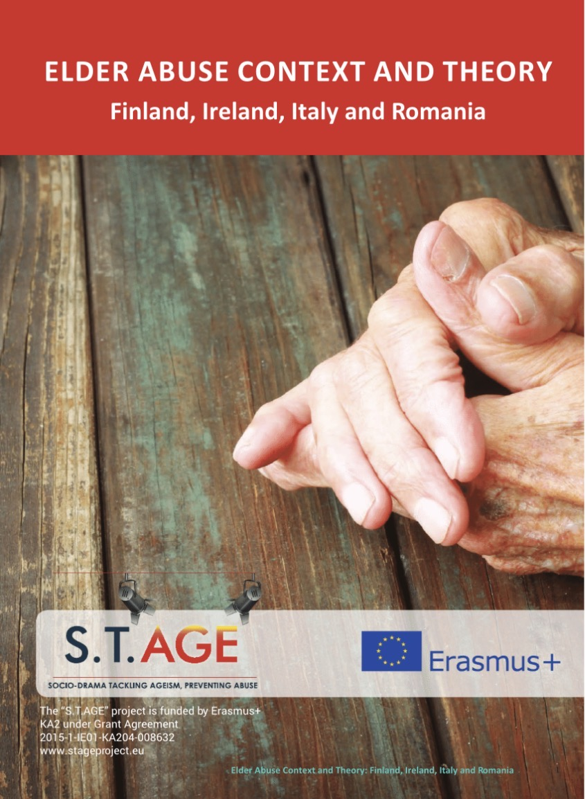

Working across
SoftwarePublic serviceResearchCommunityAccessibility
Selected work
Built to be used.
Digital products with a clear purpose.


Experience
Work in Context
Software, public service and social research.
Executive Officer · Department of Social Protection
Public service and information systems.
Strategic Development & Innovation
People-first projects and collaboration.
Research · Policy · Community Development
Education, policing, inclusion and social policy.
Research & publications
Evidence first.
Academic and applied research.
Book chapter · RoutledgeRoutledge International Handbook of Police Ethnography (Chapter 34)Book · Palgrave MacmillanPolice, Race and Culture in the ‘New Ireland’Policy submissionReview of the Equality ActsPolicy submissionNational Plan for Equity of Access to Higher Education 2022–2026Policy paperEducational Equality is Central to Ireland's Recovery

EU Erasmus+ research · 2016Elder Abuse, Context and TheoryFinland, Ireland, Italy and RomaniaPolicy reviewValue for Money and Policy Review of Youth ProgrammesApproach
Understand. Simplify. Build.
Evidence, accessibility and real user needs guide the work.
Understand
Find the real problem.
Simplify
Translate knowledge for all.
Build
Make it useful.
Contact
Let's work together.
Software, research or collaboration.
Email me